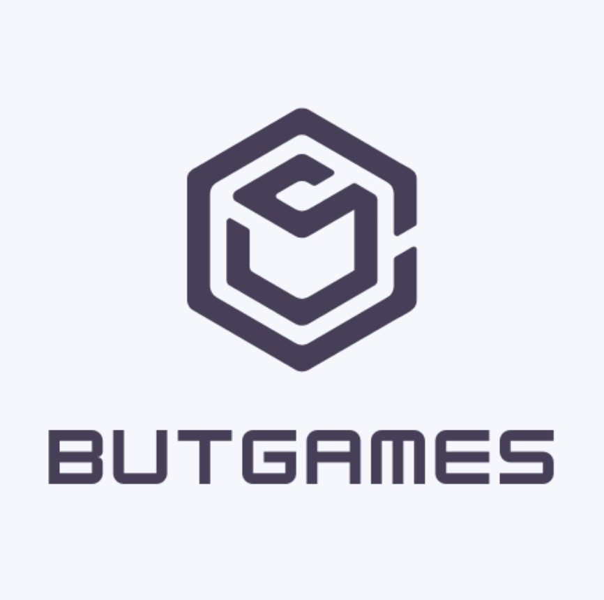

Le projet Odomo est une centrale domotique qui regroupe, une partie information
météorologique,
une gestion du chauffage, mais également la gestion de l'irrigation d'un Jardin. Ce projet m'a
permis d'apprendre à maitriser les matrices qui sont indispensables dans la programmation,
l'importance des tests unitaires pour un programme mais également la gestion du temps et du travail
d'un projet sur le long terme.
Biosphere7
Biosphere7
Ce projet m'a permis de développer une compréhension des exigences
relatives à un logiciel. J'ai dû concevoir mon code de manière ordonnée et explicite,vu que
celui-ci a pour vocation d'être utilisé par d'autres développeurs. Au cours de la seconde phase de
ce projet, il était nécessaire de concevoir deux intelligences artificielles. En conséquence, j'ai
dû élaborer deux approches distinctes. Il était impératif de se baser sur des stratégies de jeux
de plateau.

Machine virtuelle
Machine virtuelle
Le projet d'installation de poste, consiste à préparer un environnement prêt à être utilisé par des développeurs de Go. Il a fallu installer et configurer une machine virtuelle avec des caractéristiques précises pour répondre aux attentes. Ce projet m'a fait découvrir la gestion des utilisateurs d'une machine, avec la gestion des droits et la configuration des composants de shell.
Machine virtuelle
Machine virtuelle
Le projet d'installation de poste, consiste à préparer un environnement prêt à être utilisé par des développeurs de Go. Il a fallu installer et configurer une machine virtuelle avec des caractéristiques précises pour répondre aux attentes. Ce projet nous a fait découvrir la gestion des utilisateurs d'une machine, avec la gestion des droits et la configuration des composants de shell.
Machine virtuelle
Machine virtuelle
Le projet d'installation de poste, consiste à préparer un environnement prêt à être utilisé par des développeurs de Go. Il a fallu installer et configurer une machine virtuelle avec des caractéristiques précises pour répondre aux attentes. Ce projet nous a fait découvrir la gestion des utilisateurs d'une machine, avec la gestion des droits et la configuration des composants de shell.